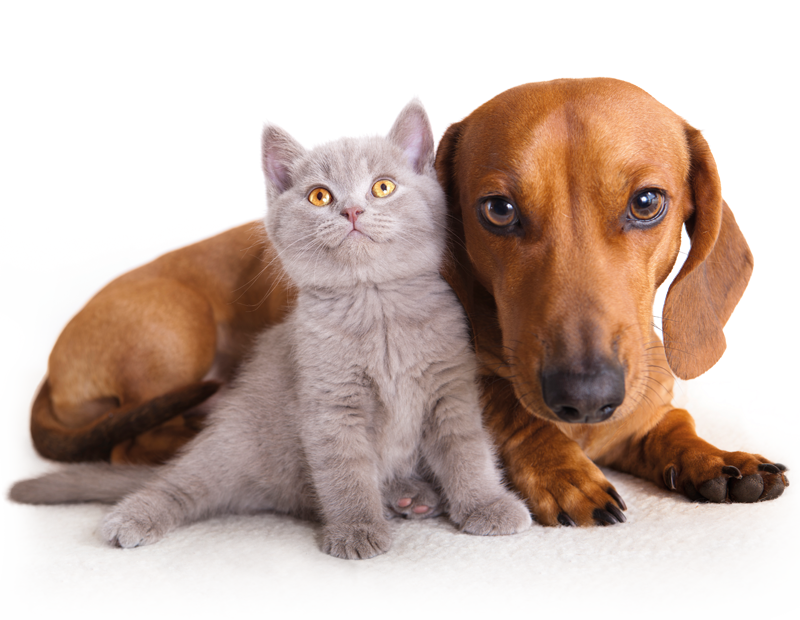

Tu Portal de Mascotas

El objetivo es crear un portal en dónde puedas encontrar información acerca de dónde puedes llegar a tus mascotas
Muchos dueños desconocen de lugares en dónde son permitidos o prohibidos para ellos, queremos facilitar e informar de estos para que los dueños sepan dónde llevar a sus mascotas, tengan experiencias en estos lugares, recomendaciones, restaurantes, guarderías, lugares de convivencia, donde puedas llevarlos o entrenarlos, cómo también centros de rehabilitación y adopción, hasta lugares turísticos dónde puedas llevarlos, hoteles dónde se admitan.
